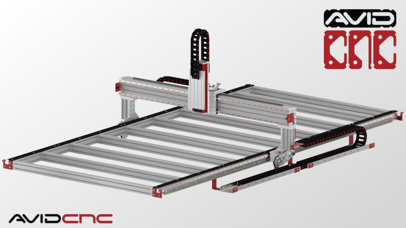

avid cnc 60120 pro revision 2314

On Tue Apr 14, we purchased a chcrouterparts.com 5x10 Pro CNC router kit. This page documents the changes I've made to that machine, and the processes used to work with it.
Workflow
- Avid chip load calculator (xls spreadsheet).
- Candle Grbl controller
Assembly Instructions
http://www.cncrouterparts.com/support/pro/60120/Preparation/
Work holding
{| class="wikitable"
|-
! Quantity !! Part !! Link
|-
| 1 || E-Z Lok Threaded Insert, Zinc, Hex-Flanged, 1/4"-20 Internal Threads, 13mm Length (Pack of 100) || [[https://www.amazon.com/gp/product/B002KT43MU/ref=ppx_yo_dt_b_asin_title_o03_s01?ie=UTF8&psc=1|Amazon]]
|-
| 1 || Performix 11604-6 Blue Plasti Dip, 14.5 fl oz || [[https://www.amazon.com/gp/product/B000HE9T6A/ref=ppx_yo_dt_b_asin_title_o03_s00?ie=UTF8&psc=1|Amazon]]
|-
| 2 || Lot 10 Each 1/4 20 Male Thread Star Knobs 2” Diameter with 2" Long Threaded Post || [[https://www.amazon.com/gp/product/B01DVH0K30/ref=ppx_yo_dt_b_asin_title_o00_s00?ie=UTF8&psc=1|Amazon]]
|-
| 1 || POWERTEC 71037-P2 Low Profile Bench Dogs | Woodworking Workbench Peg Stoppers for 3/4 inch Holes | Black – 8 Pack || [[https://www.amazon.com/gp/product/B07Y1W8ZTM/ref=ppx_yo_dt_b_asin_title_o00_s00?ie=UTF8&psc=1|Amazon]]
|-
| 2 || Kreg KBCIC In-Line Clamp (Pack of 2) || [[https://www.amazon.com/gp/product/B0777RVDF4/ref=ppx_yo_dt_b_asin_title_o01_s00?ie=UTF8&psc=1|Amazon]]
|-
| 5 || Craftsman Auto-Adjust Push Peg Clamp 949808 || [[https://www.amazon.com/gp/product/B01M9GLNZ9/ref=ppx_yo_dt_b_asin_title_o02_s00?ie=UTF8&psc=1|Amazon]]
|}
Dust Collection
{| class="wikitable"
|-
! Quantity !! Part !! Link
|-
| 1 || Spindle Dust Shoe Cover || [[https://www.amazon.com/gp/product/B07XFNMLLD/ref=ppx_yo_dt_b_asin_title_o01_s00?ie=UTF8&psc=1|Amazon]] [[http://www.cncrouterparts.com/universal-cnc-dust-shoe-p-396.html|Universal CNC dust shoe]]
|-
| 1 || Duct reducer || [[https://www.amazon.com/gp/product/B0822PMH4R/ref=ppx_yo_dt_b_asin_title_o02_s00?ie=UTF8&psc=1|Amazon]] - replace with 3D print
|-
| 1 || Three machine dust collection kit || [[https://www.amazon.com/gp/product/B01N21P1WE/ref=ppx_yo_dt_b_asin_title_o02_s00?ie=UTF8&psc=1|Amazon]] - replace with 3D print
|-
| 1 || 20 feet of 4" diameter PVC hose || [[https://www.amazon.com/gp/product/B01MDUGEXE/ref=ppx_yo_dt_b_asin_title_o02_s00?ie=UTF8&psc=1|Amazon]]
|-
| 1 || 4 Inch Dust Collection Cyclone Separator Kit for Trash Cans, Barrels or Custom Built Containers || [[https://www.amazon.com/gp/product/B074Y7F5QH/ref=ppx_yo_dt_b_asin_title_o03_s00?ie=UTF8&psc=1|Amazon]] - replace with 3D print
|-
| 1 || 6 inch duct fan || [[https://www.amazon.com/VIVOSUN-Inline-Ventilation-Variable-Controller/dp/B01CTM0JF2|Amazon]]
|-
| 1 || Replacement dust brush || [[https://www.amazon.com/Konmison-Cleaner-Engraving-Machine-Spindle/dp/B01566L3HQ/|Amazon]]
|}
Electronics
Replacement of Ethernet Smoothstepper
The ethernet smoothstepper, while an impressive device, does not appear to be well documented or supported by Free Software. I've decided to replace it with a raspberry pi 3b+ running cnc.js and arduino mega 2560 running grbl. I've created a protoboard PCB to house the pi and arduino and to provide mounting points within the electronics cabinet. Polarized 26 pin headers have been used to interface with the existing smoothstepper compatible connectors. In this way, the electronics cabinet can be restored to original configuration with minimal effort.
{| class="wikitable"
|-
! Quantity !! Part !! Link
|-
| 1 || Arduino MEGA 2560 PRO || [[https://www.amazon.com/gp/product/B07Y9P4JL2/ref=ppx_yo_dt_b_asin_title_o00_s00?ie=UTF8&psc=1|Amazon]]
|-
| 1 || LPC1768 mbed development board || [[https://www.ebay.com/itm/mbed-NXP-LPC-1768-ARM-Cortex-M3-Microcontroller/254530741476?ssPageName=STRK%3AMEBIDX%3AIT&_trksid=p2057872.m2749.l2649|ebay]]
|-
| 1 || 15Pcs 2x13 Pins 2.54mm Pitch Straight Connector Pin IDC Box Headers || [[https://www.amazon.com/gp/product/B00OK3T60I/ref=ppx_yo_dt_b_asin_title_o00_s00?ie=UTF8&psc=1|Amazon]]
|}
Initial firmware will focus on cnc.js and the grbl-Mega Atmega 2560 port of grbl. LPC1768 port of grbl is available as a fallback.
Laser
{| class="wikitable"
|-
! Quantity !! Part !! Link
|-
| 1 || 5.5W optical (20W wall) [[http://nejetool.com/module_20w.html|450nm laser module]] ||
|}
Interface specification: 4pin PH2.0 (red: 12V, black: GND, yellow: PWM, green: temperature signal)
Wavelength: 450nm
Radiator size: 30*80mm
Material: copper + aluminum
Weight: 202g
Drive position: built-in
Is the power adjustable: PWM can be adjusted, PWM: 50KHz-20KHz / 3.3V-12V
Drive protection: surge protection, overvoltage protection
Input power: approx. 12V2A, about20W (without fan power)
Output optical power: 5.5W
Line length: 300mm
Control line installation method: pluggable
Fan size: 30*10mm
Fan speed: 15000 rpm
Controllable temperature: less than 60 degrees Celsius
Best focus range: 40mm-50mm